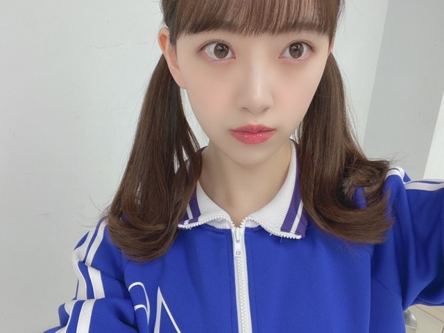
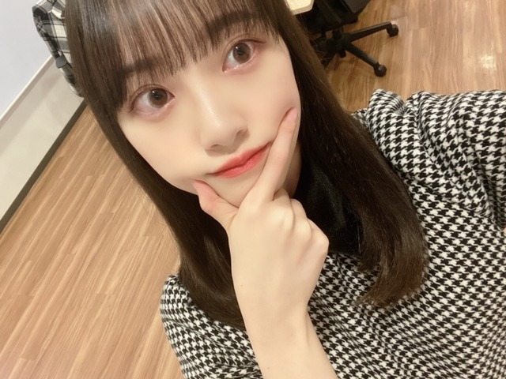

2020/0314Satテレパシイ
まなつさん☺︎

明日の乃木坂工事中も観てください~！
1期生vs2.3.4期生だったのですが
ゲームも本気で楽しくやりたい人なので
がんばりました☺︎
しばらくはまったり過ごしたいな。笑
今日、雪降ってきてびっくりしました...
春なのに！
寒いので皆さん体調にはお気をつけてください！
最近はプライベートで
エチュードハウスで色々コスメ買えたし
レッスン着も買えたしかわいいイヤリングも見つけて
私はハッピーです。笑
ダンスも最近やってて、かわいいレッスン着きると頑張れます☺︎！
スニーカーも新調したいな~
もっとダンス上手くなりたいしいろんなジャンルに挑戦したいです✨

今日は千と千尋の神隠しを観よう！
そんな気分
ではは
2020/03/14 16:06
コメント(368)
未央奈ちゃんブログ更新ありがとう！
さくらちゃんとあやめちゃんと同じ愛知県出身の覇王です！
真夏キャプテンとのツーショットめっちゃ可愛いよ！
未央奈ちゃんのツインテール珍しいね！
明日の乃木坂工事中楽しみにしてるよ！
これからも頑張ってね！
応援してるよ！
さくらちゃんとあやめちゃんと同じ愛知県出身の覇王です！
真夏キャプテンとのツーショットめっちゃ可愛いよ！
未央奈ちゃんのツインテール珍しいね！
明日の乃木坂工事中楽しみにしてるよ！
これからも頑張ってね！
応援してるよ！
未央奈ちゃん、こんばんは♪
乃木坂工事中を見ますね。
ゲームをしたのですね。
格闘ゲームやパズルゲームやレースゲーム、
などの対戦できるゲームをしたと思います。
未央奈ちゃんと部屋でファイナルファンタジー
シリーズのゲームをしながら過ごしたいです。
東京の方にはエチュードハウスというお店が
あるのですね。
コスメを買ったのですね。
僕もコスメに興味があるのでパソコンで
コスメのことを調べようと思います。
イヤリングも好きです。
タオルやハンカチなどにも興味があります。
文房具なども好きです。
ではまたコメントしますね☆
乃木坂工事中を見ますね。
ゲームをしたのですね。
格闘ゲームやパズルゲームやレースゲーム、
などの対戦できるゲームをしたと思います。
未央奈ちゃんと部屋でファイナルファンタジー
シリーズのゲームをしながら過ごしたいです。
東京の方にはエチュードハウスというお店が
あるのですね。
コスメを買ったのですね。
僕もコスメに興味があるのでパソコンで
コスメのことを調べようと思います。
イヤリングも好きです。
タオルやハンカチなどにも興味があります。
文房具なども好きです。
ではまたコメントしますね☆
ブログ更新ありがとございます。
質問なんですが、サッカー好きですか?
答えてくれたら嬉しいです。
質問なんですが、サッカー好きですか?
答えてくれたら嬉しいです。
すちすち
未央奈～～～～～～～～～～～～～～～～。
明日の乃木中ですね。了～～～解。予約しました。OK。
今日、雪降りましたね。もう寒くて、寒くて、ビックリこきまろです。未央奈も体を大切にね。風邪ときどきコロナに注意を。では。更新有り難うござます。
明日の乃木中ですね。了～～～解。予約しました。OK。
今日、雪降りましたね。もう寒くて、寒くて、ビックリこきまろです。未央奈も体を大切にね。風邪ときどきコロナに注意を。では。更新有り難うござます。
更新ありがとう〜
相変わらず花粉症辛いですね、僕も花粉症がめちゃくちゃ辛くて目がかゆいわ鼻がムズムズするわくしゃみが出るわで大変ですし、マスクしてくしゃみとか咳しただけでコロナじゃないのに周りから白い目で見られるし、花粉症に冷たい世界になっちまったよ笑
実家も花屋ですしこれから働く所も花屋なので1年中ほぼ花粉症なんですけどね笑薬の量がやばいねほんのにストックがめちゃくちゃあるよ笑
花粉症の時期に、冷たい物と甘い物と生物をあまり食べない方がいいんですって花粉症を悪化させるんですって詳しくわ忘れましたけど、姉が看護師やっているので聞きました！よかっから参考してみてくださいアルコールも控えた方がいいですよ！
コメ読みお疲れ様です☆
またね〜
相変わらず花粉症辛いですね、僕も花粉症がめちゃくちゃ辛くて目がかゆいわ鼻がムズムズするわくしゃみが出るわで大変ですし、マスクしてくしゃみとか咳しただけでコロナじゃないのに周りから白い目で見られるし、花粉症に冷たい世界になっちまったよ笑
実家も花屋ですしこれから働く所も花屋なので1年中ほぼ花粉症なんですけどね笑薬の量がやばいねほんのにストックがめちゃくちゃあるよ笑
花粉症の時期に、冷たい物と甘い物と生物をあまり食べない方がいいんですって花粉症を悪化させるんですって詳しくわ忘れましたけど、姉が看護師やっているので聞きました！よかっから参考してみてくださいアルコールも控えた方がいいですよ！
コメ読みお疲れ様です☆
またね〜
みおな
今日もお疲れ様です
真夏とみおなの組み合わせ結構好きです
今年はみおなの写真集を1番乗りで買いたいけど、真夏の方が発売が早そうなので、真夏を1番乗りにさせるか迷ってます
或いはみおなの写真集が発売してから、真夏の写真集を買うという、別に真夏のから買えばいいじゃんって思うけど俺の拘りです笑（ちなみに美月と与田ちゃんとまいやんの限定のやつはみおなの一番乗りの為に買ってません笑）
だからそれくらい2nd写真集楽しみに待ってるよ！（毎月誰かが写真集出すから5月と見た）
今日は久々に寒かったし雪も降ったからびっくりしました
この時期は寒さがぶり返す事もあるから、体調に気を付けてね（そうは言っても、暖かくなってきて日も長くなってきて過ごしやすくなってきたよね）
エチュードハウスは、竹下通りで見かけた気がするけど、合ってるかな？
何のお店か分からなくて、女の子がたくさんいるイメージだったけど、コスメ屋さんだったんですね（綿あめ屋さんのカラフルな綿あめは食べた事ある）
買い物も出来てよかったね
明日の乃木中も久々にジャージ企画だから楽しみにしてます
30分の内CMとかで実質20分弱だからいつもあっという間だね（もっと観てたいと思うけど、それで月曜から頑張ってます）
ありがとうございました
今日もお疲れ様です
真夏とみおなの組み合わせ結構好きです
今年はみおなの写真集を1番乗りで買いたいけど、真夏の方が発売が早そうなので、真夏を1番乗りにさせるか迷ってます
或いはみおなの写真集が発売してから、真夏の写真集を買うという、別に真夏のから買えばいいじゃんって思うけど俺の拘りです笑（ちなみに美月と与田ちゃんとまいやんの限定のやつはみおなの一番乗りの為に買ってません笑）
だからそれくらい2nd写真集楽しみに待ってるよ！（毎月誰かが写真集出すから5月と見た）
今日は久々に寒かったし雪も降ったからびっくりしました
この時期は寒さがぶり返す事もあるから、体調に気を付けてね（そうは言っても、暖かくなってきて日も長くなってきて過ごしやすくなってきたよね）
エチュードハウスは、竹下通りで見かけた気がするけど、合ってるかな？
何のお店か分からなくて、女の子がたくさんいるイメージだったけど、コスメ屋さんだったんですね（綿あめ屋さんのカラフルな綿あめは食べた事ある）
買い物も出来てよかったね
明日の乃木中も久々にジャージ企画だから楽しみにしてます
30分の内CMとかで実質20分弱だからいつもあっという間だね（もっと観てたいと思うけど、それで月曜から頑張ってます）
ありがとうございました
未央奈～ こんにちは
連日のブログ更新ありがとうございます。
今月は他を圧倒的に引き離しての堂々１位のブログ更新、私たちファンとしてはうれしい限りです。ブログや７５５を大切にしてくれるこの姿勢、デビュー以来ずっとですから、ホント頭の下がる思いです。
未央奈の魅力は、よく「不思議ちゃん」としてみんなが考えもしないことをやってのける‥‥なんて言われていますが、そうではなく、自分がやれることをずっと大切にし続けていること、ここにあると思います。そしてあとは透き通ったようなまさに「透明感」、そしてレコメンで見せてきた「大笑い」。私たちに「しあわせ」を運んでもらっています。
今日は「Ｍ－ＯＮ」でしっかりと６ｔｈバスラを楽しみました。こんなにもメンバー変わっているんだと改めて思いました。
今日の東京は、「雪」が降る一方で、「桜の開花宣言」も発表。寒の戻りと言うか肌寒い一日てしたね。そうです。季節の変わり目は寒暖の差が激しく、風邪をひきやすいので、特に気をつけてくださいね。
明日の工事中ですね。もちろん見ますよ。楽しみです。
４月のＭステ特番、まいやんのラストＭステ、こちらも楽しみにしたいと思います。
連日のブログ更新ありがとうございます。
今月は他を圧倒的に引き離しての堂々１位のブログ更新、私たちファンとしてはうれしい限りです。ブログや７５５を大切にしてくれるこの姿勢、デビュー以来ずっとですから、ホント頭の下がる思いです。
未央奈の魅力は、よく「不思議ちゃん」としてみんなが考えもしないことをやってのける‥‥なんて言われていますが、そうではなく、自分がやれることをずっと大切にし続けていること、ここにあると思います。そしてあとは透き通ったようなまさに「透明感」、そしてレコメンで見せてきた「大笑い」。私たちに「しあわせ」を運んでもらっています。
今日は「Ｍ－ＯＮ」でしっかりと６ｔｈバスラを楽しみました。こんなにもメンバー変わっているんだと改めて思いました。
今日の東京は、「雪」が降る一方で、「桜の開花宣言」も発表。寒の戻りと言うか肌寒い一日てしたね。そうです。季節の変わり目は寒暖の差が激しく、風邪をひきやすいので、特に気をつけてくださいね。
明日の工事中ですね。もちろん見ますよ。楽しみです。
４月のＭステ特番、まいやんのラストＭステ、こちらも楽しみにしたいと思います。
かわいいです！
こんばんは！
ブログ更新ありがとうございます
乃木中は毎週楽しみにしてます✨
1期生vs2.3.4期のゲーム楽しそう
千と千尋の神隠しは私も何回も観ました！！
でも、最近観てなかったから私も観よう✨
では、体調に気を付けて頑張ってください❗
おやすみなさい
ブログ更新ありがとうございます
乃木中は毎週楽しみにしてます✨
1期生vs2.3.4期のゲーム楽しそう
千と千尋の神隠しは私も何回も観ました！！
でも、最近観てなかったから私も観よう✨
では、体調に気を付けて頑張ってください❗
おやすみなさい
堀ちゃん、こんばんは。
今日、雪降ったね。
いやぁー、寒かった
ところで、実は今日すごく大きな発見があったよ
聞きたいー？どうー？どうー？
そうか、そうか、そんなに聞きたいなら教えてあげるねっ！
1回しか言わないからね、いーい？
それじゃあ、言うよ。実はね・・・。
ほんとに一回しか言わないよ？メモの準備とかだいじょーぶ？？
オッケー！じゃあ、言うよ。実は・・・。
聞くのをやめとくなら、今のうちだよ。
本当に言っちゃうよ、ほんとにほんとに心の準備はいーい？
じゃあ言うよ、実はね・・・。
・・・うちのテレビとブルーレイのコードの繋ぎ方、間違ってた(・ω・)
・・・今っっっ更！！！
だいぶ前から「なんか、うちのテレビ環境は不器用だなぁ～」って感じてはいたけど、よくよくテレビとブルーレイレコーダーを観察してみたら、手持ち無沙汰になっている端子を見つけて「・・・これは？？？」ってなった
今日は、我が家の歴史が変わった日だ
今日、雪降ったね。
いやぁー、寒かった
ところで、実は今日すごく大きな発見があったよ
聞きたいー？どうー？どうー？
そうか、そうか、そんなに聞きたいなら教えてあげるねっ！
1回しか言わないからね、いーい？
それじゃあ、言うよ。実はね・・・。
ほんとに一回しか言わないよ？メモの準備とかだいじょーぶ？？
オッケー！じゃあ、言うよ。実は・・・。
聞くのをやめとくなら、今のうちだよ。
本当に言っちゃうよ、ほんとにほんとに心の準備はいーい？
じゃあ言うよ、実はね・・・。
・・・うちのテレビとブルーレイのコードの繋ぎ方、間違ってた(・ω・)
・・・今っっっ更！！！
だいぶ前から「なんか、うちのテレビ環境は不器用だなぁ～」って感じてはいたけど、よくよくテレビとブルーレイレコーダーを観察してみたら、手持ち無沙汰になっている端子を見つけて「・・・これは？？？」ってなった
今日は、我が家の歴史が変わった日だ
前髪かわゆい〜
乃木中楽しみにしてる♪
乃木中楽しみにしてる♪
こんにちわ！
みおなちゃんのエチュードハウスの購入品みたいですー！！
メイクお揃いにしたい
みおなちゃんのエチュードハウスの購入品みたいですー！！
メイクお揃いにしたい
お疲れ様です、堀さん！
今日も新しいブログを見せてくれてありがとうございます
最近なんですけどね、以前堀さんがブログで観たといっていたパージとMEGザ・モンスター、観ました。
そうですね、パージ、スリリング、バイオレンスといった要素のある映画ってけっこうあって、個人的にもこれまでそういった要素を持つ映画はけっこう観てきたと思うのですけど、なんといいましょうか、パージはどこか新しいなという感覚を覚えましたね。
ストーリーですかね？個人的にはこれまであまり観たことがないなと思いましたね！
そして、MEGザ・モンスターですね！
そうですね、アニマルパニック、パニックアクション、こういったジャンルの映画だと思ったから、MEGがどうゆう風に暴れるのだろうという点に注目してたのですけど、まず映像美、施設内部から観た深海の様子とかね、映像がキレイだなと思いましたね！
そして、アニマルパニック映画、けっこう現実離れした展開になる作品もあるのかもしれないですけど、なんといいますか、展開を見てると、こうゆう展開はあながちなくもないのではないかなと感じるシーンもけっこうありましたね
そうですね、なんといいますか、従来のアニマルパニック、パニックアクション映画の固定観念といいますか、こうゆうシチュエーションではこうゆう展開になりそうだなというシーンでもそうはならないという展開もけっこうあったなと思いましたね！
そうですね、長々と勝手に映画の感想を語りましたね
乃木坂工事中、観たいと思います！
それでは、健康にはお気をつけてお過ごしください！
今日も新しいブログを見せてくれてありがとうございます
最近なんですけどね、以前堀さんがブログで観たといっていたパージとMEGザ・モンスター、観ました。
そうですね、パージ、スリリング、バイオレンスといった要素のある映画ってけっこうあって、個人的にもこれまでそういった要素を持つ映画はけっこう観てきたと思うのですけど、なんといいましょうか、パージはどこか新しいなという感覚を覚えましたね。
ストーリーですかね？個人的にはこれまであまり観たことがないなと思いましたね！
そして、MEGザ・モンスターですね！
そうですね、アニマルパニック、パニックアクション、こういったジャンルの映画だと思ったから、MEGがどうゆう風に暴れるのだろうという点に注目してたのですけど、まず映像美、施設内部から観た深海の様子とかね、映像がキレイだなと思いましたね！
そして、アニマルパニック映画、けっこう現実離れした展開になる作品もあるのかもしれないですけど、なんといいますか、展開を見てると、こうゆう展開はあながちなくもないのではないかなと感じるシーンもけっこうありましたね
そうですね、なんといいますか、従来のアニマルパニック、パニックアクション映画の固定観念といいますか、こうゆうシチュエーションではこうゆう展開になりそうだなというシーンでもそうはならないという展開もけっこうあったなと思いましたね！
そうですね、長々と勝手に映画の感想を語りましたね
乃木坂工事中、観たいと思います！
それでは、健康にはお気をつけてお過ごしください！
ブログ更新多くて嬉しいです！
ツインテール可愛い！！
ツインテール可愛い！！
ツインテール可愛いです。
惚れ惚れします。
惚れ惚れします。
ツインテールの破壊力やばいです。
普通にやられました。
普通にやられました。
新しいコスメ等を見つけると、テンション上がるよね！ここに来てまた寒くなったけど、風邪引かないように気を付けてね(^^)/
未央奈さん、こんばんは
まなつさんとツーショット
最近のお気に入りです
どっちがお姉さん？？
なんか、ウケる(^_^)
乃木坂工事中、観ますよ～
対戦シリーズ大好きです
楽しみにしてます
プライベートも楽しそうですね
春ですな～
一緒に空を見上げてることも
あるのかなぁ
いつも応援しています(^_^)
まなつさんとツーショット
最近のお気に入りです
どっちがお姉さん？？
なんか、ウケる(^_^)
乃木坂工事中、観ますよ～
対戦シリーズ大好きです
楽しみにしてます
プライベートも楽しそうですね
春ですな～
一緒に空を見上げてることも
あるのかなぁ
いつも応援しています(^_^)
こんばんは！納品ウォーズお疲れさまです。さっきビレバンでお見かけしたときは余りの可愛さにビックリしてつい声をかけてしまいました。接吻のタイミングが少し焦らしてからのあの間合いで良かったかな？
空白の三年を早く埋めたいですし、つのる話もあるので今度一緒に食事でもどうでしょう。
もうすぐ春ですね恋をしてみませんか？
んだば
空白の三年を早く埋めたいですし、つのる話もあるので今度一緒に食事でもどうでしょう。
もうすぐ春ですね恋をしてみませんか？
んだば
乃木坂工事中楽しみにしてます、特にジャージでみんなが対決とか好きです。
ホントにみんな本気だし楽しんでるから、観ているこちらも楽しいです。
乃木坂の良いところだと思います。
雪一瞬見ました、前日はポカポカしてたのに一転めちゃめちゃ寒い。寒暖差ありすぎで大変ですね。
体調お気をつけてくださいませ。
ホントにみんな本気だし楽しんでるから、観ているこちらも楽しいです。
乃木坂の良いところだと思います。
雪一瞬見ました、前日はポカポカしてたのに一転めちゃめちゃ寒い。寒暖差ありすぎで大変ですね。
体調お気をつけてくださいませ。
かわいいー
かわいいです
ブログ更新ありがと～
体調に気を付けて頑張れ！！
体調に気を付けて頑張れ！！
堀未央奈さん。こんばんは。
最初の真夏さんとの写真。やっぱり未央奈さんの方が顔が小さいかな。笑
それと
髪がツインテールでしたね。未央奈さんのツインテールはなかなか見ないから貴重な写真ですね。
未央奈さんはジブリ作品好きなんですね。
乃木坂工事中の４期生PR企画で北川悠理さんを紹介するときに、たしか、魔女の宅急便をしてたような…笑
プライベートは充実してますね。乃木坂の曲の振り付けは、キレキレでしなやかなのに、プライベートでもダンスしてるんですね。頑張り屋さんなとこ凄いです。
未央奈さんのその日その日が素敵な日でありますように！
未央奈さん。尊敬してます。
またコメントします。
0606より
最初の真夏さんとの写真。やっぱり未央奈さんの方が顔が小さいかな。笑
それと
髪がツインテールでしたね。未央奈さんのツインテールはなかなか見ないから貴重な写真ですね。
未央奈さんはジブリ作品好きなんですね。
乃木坂工事中の４期生PR企画で北川悠理さんを紹介するときに、たしか、魔女の宅急便をしてたような…笑
プライベートは充実してますね。乃木坂の曲の振り付けは、キレキレでしなやかなのに、プライベートでもダンスしてるんですね。頑張り屋さんなとこ凄いです。
未央奈さんのその日その日が素敵な日でありますように！
未央奈さん。尊敬してます。
またコメントします。
0606より
堀さん、こんばんは。ブログ更新してくれてありがとうございます。
まったりしたいということは、以前の四つ巴の綱引きとか玉入れみたく疲れるゲームばかりだったんでしょうか。楽しみです。
かわいいレッスン着も有って良かったですね。やる気を維持するのに好みのモノを使うのっていいアイデアですね。
最近はジブリ祭り開催中みたいですね。レコメンに料理持って行った後に千と千尋見ようと思ったって言ったら、きっとオテンキのりさんもスタッフさん達も被害妄想で遊んでくれると思います。
寒いので堀さんも暖かくしてくださいね。毎晩あったかくして寝てねといえば、ドラマで間宮祥太朗さんが感情を抑えた役どころをやってると僕にはどうにも凌のその後に見えて、初に幸せになって欲しいって想い続けてるんじゃないかなって思ってしまいます。
まったりしたいということは、以前の四つ巴の綱引きとか玉入れみたく疲れるゲームばかりだったんでしょうか。楽しみです。
かわいいレッスン着も有って良かったですね。やる気を維持するのに好みのモノを使うのっていいアイデアですね。
最近はジブリ祭り開催中みたいですね。レコメンに料理持って行った後に千と千尋見ようと思ったって言ったら、きっとオテンキのりさんもスタッフさん達も被害妄想で遊んでくれると思います。
寒いので堀さんも暖かくしてくださいね。毎晩あったかくして寝てねといえば、ドラマで間宮祥太朗さんが感情を抑えた役どころをやってると僕にはどうにも凌のその後に見えて、初に幸せになって欲しいって想い続けてるんじゃないかなって思ってしまいます。
今夜は、マンダロリアン全８話を観よう！？
渋く孤独な一匹狼のガンファイターのバウンティハンターでマンドが愛くるしいベビーヨーダを、
連れて送り届けるため果てしない二人旅を描く！ドラマチック過ぎた・・・。
今年のドラマのアカデミーになるエミー賞最有力！だと思うほどよく出来たスター・ウォーズサーガの初ドラマ化・・・。
話が進むごとに最高に面白い展開が続きますよ！
最終回の盛り上がりが半端じゃないです・・・。
因みに、今日は、スターウォーズ・帝国の逆襲を
観たい気分・・・！？
それでは体調に気をつけて頑張りましょう。
渋く孤独な一匹狼のガンファイターのバウンティハンターでマンドが愛くるしいベビーヨーダを、
連れて送り届けるため果てしない二人旅を描く！ドラマチック過ぎた・・・。
今年のドラマのアカデミーになるエミー賞最有力！だと思うほどよく出来たスター・ウォーズサーガの初ドラマ化・・・。
話が進むごとに最高に面白い展開が続きますよ！
最終回の盛り上がりが半端じゃないです・・・。
因みに、今日は、スターウォーズ・帝国の逆襲を
観たい気分・・・！？
それでは体調に気をつけて頑張りましょう。
テレビやブログなど見てて思うけど乃木坂はホントに仲良しだね！
見てて羨ましいです…。
乃木坂工事中は毎週、楽しみにしてるので必ず見ます！
堀ちゃんも体調には気をつけてください！
見てて羨ましいです…。
乃木坂工事中は毎週、楽しみにしてるので必ず見ます！
堀ちゃんも体調には気をつけてください！
千と千尋大好きです。
最高だよね！今度また観ます
最高だよね！今度また観ます
未央奈ブログ更新ありがとう!!
乃木坂工事中絶対見るね!!
ツインテール最高〜!!!!!!!!!!
乃木坂工事中絶対見るね!!
ツインテール最高〜!!!!!!!!!!
堀ちゃんこんばんは！
これからも応援するから頑張ってね！
体に気をつけてね！
これからも応援するから頑張ってね！
体に気をつけてね！
みおなほしい〜みおなほしい〜(カオナシVOICE)
(≧∇≦)b
(≧∇≦)b
今の情勢ではヒット祈願のロケとか厳しいかな。
早くコロナ治まれ‼
早くコロナ治まれ‼
おはようございます☺
夜中？明け方か✨
目が覚めた(笑)
今日は休みにて気持ちが楽なん？(笑)かな
真夏ちゃんとの写真良いね。
確か真夏ちゃんも写真集出すみたいやね✨
乃木坂ファンも嬉しい迷い？✨
いろんな意味で切磋琢磨出来たら良いな☺
今美月ちゃん、与田ちゃんが先行して発表してるもんね☺
昨日東京は雪が降ったみたいやね✨
体調大丈夫かい？
こういう時やから特に体調大事にね✨
ではではまたね✨
ほなね、堀ちゃん☺
夜中？明け方か✨
目が覚めた(笑)
今日は休みにて気持ちが楽なん？(笑)かな
真夏ちゃんとの写真良いね。
確か真夏ちゃんも写真集出すみたいやね✨
乃木坂ファンも嬉しい迷い？✨
いろんな意味で切磋琢磨出来たら良いな☺
今美月ちゃん、与田ちゃんが先行して発表してるもんね☺
昨日東京は雪が降ったみたいやね✨
体調大丈夫かい？
こういう時やから特に体調大事にね✨
ではではまたね✨
ほなね、堀ちゃん☺
更新ありがとうございます！
ドラえもんでテレパシイっていう道具があったなーと思い出しました笑
みおなさんのような大人でかわいらしい女性になりたいと思います
ドラえもんでテレパシイっていう道具があったなーと思い出しました笑
みおなさんのような大人でかわいらしい女性になりたいと思います
おはようございます。
今度の乃木中は対決なんですね。
1期と2.3.4期って、1期は不利なんじゃ。。。笑
楽しみ♪
昨日は寒かったぁー(>_<)
みおなちゃんの言う様に場所によっては雪降ったんだってね。
そりゃ寒いわけですわ。
本日の朝も寒いし、布団から出たくないね。笑
幻の
いや
伝説の2期配信ライブ
あれ以来、アナスターシャを毎日聴いてます！
MVも2期の歴史が詰まってるし、考察してるとマジ泣ける。
最近の自分は涙脆くて嫌になります(^_^;)
ブログたくさん更新してくれてありがとう！
みおなちゃんの笑顔にいつも元気と癒しを頂いてます。
これからもお世話になります。
★とし★
今度の乃木中は対決なんですね。
1期と2.3.4期って、1期は不利なんじゃ。。。笑
楽しみ♪
昨日は寒かったぁー(>_<)
みおなちゃんの言う様に場所によっては雪降ったんだってね。
そりゃ寒いわけですわ。
本日の朝も寒いし、布団から出たくないね。笑
幻の
いや
伝説の2期配信ライブ
あれ以来、アナスターシャを毎日聴いてます！
MVも2期の歴史が詰まってるし、考察してるとマジ泣ける。
最近の自分は涙脆くて嫌になります(^_^;)
ブログたくさん更新してくれてありがとう！
みおなちゃんの笑顔にいつも元気と癒しを頂いてます。
これからもお世話になります。
★とし★
かわいいよー！
みおなちゃん、大好きです
未央奈ちゃん更新ありがとー！
いかがお過ごしでしょうか？
寒暖差が激しいときなので体調にはお気をつけください。
自分もスニーカーが欲しいなー！
ではでは～
いかがお過ごしでしょうか？
寒暖差が激しいときなので体調にはお気をつけください。
自分もスニーカーが欲しいなー！
ではでは～
未央奈ちゃん、おはよう。
何気にいろんな髪形を見せてくれる
ので嬉しいです。これも可愛い。
このブログを見た後でインスタを見たら
やっぱ観ないと衝撃？の告白が…
え〜⁉︎
でも、気分と書いてあるから
そのパターンもあるよねと
妙に納得してしまった。
手のひらの上で転がされたと思いつつ
悪い気はしない。
未央奈ちゃんの魅力に勝てませんなぁ。
今日の乃木中も楽しみにしてるよ〜
では。
何気にいろんな髪形を見せてくれる
ので嬉しいです。これも可愛い。
このブログを見た後でインスタを見たら
やっぱ観ないと衝撃？の告白が…
え〜⁉︎
でも、気分と書いてあるから
そのパターンもあるよねと
妙に納得してしまった。
手のひらの上で転がされたと思いつつ
悪い気はしない。
未央奈ちゃんの魅力に勝てませんなぁ。
今日の乃木中も楽しみにしてるよ〜
では。
雪、びっくりした〜!!!!
可愛くて尊い未央奈ちゃんを今年も楽しみにしてまっす
可愛くて尊い未央奈ちゃんを今年も楽しみにしてまっす
ブログ更新ありがとう。
未央奈ちゃんの様子を発信してくれるので嬉しいです。
まなっちゃんとも仲良いねー。仲良いからこそのたまにテレビで見るまなっちゃんへの辛口コメントが微笑ましい笑
未央奈ちゃんは、3、4期とどんな絡みをしてるのかなー。
今日の乃木坂工事中で垣間見れるのかなー？楽しみにしてます。
なんでも一生懸命、全力で取り組む未央奈ちゃんを観ていて楽しいですし、感心します。ゲームも絵もダンスも歌も映画も撮影も、モデルも。ずいぶん前、いくちゃんが ありのままで頑張っていれば、周りが評価してくれる みたいな事を真剣に言ってたけど、ホントその通りやなーって思う。
だから、未央奈ワールドももっともっと広がっていくと思う！
東京では桜の開花宣言と同時に雪も降ったみたいだね。
雪と桜って相反するようなもののコラボレーションって、時に美しいね。
アイドル 堀未央奈 これからも楽しみです！
未央奈ちゃんの様子を発信してくれるので嬉しいです。
まなっちゃんとも仲良いねー。仲良いからこそのたまにテレビで見るまなっちゃんへの辛口コメントが微笑ましい笑
未央奈ちゃんは、3、4期とどんな絡みをしてるのかなー。
今日の乃木坂工事中で垣間見れるのかなー？楽しみにしてます。
なんでも一生懸命、全力で取り組む未央奈ちゃんを観ていて楽しいですし、感心します。ゲームも絵もダンスも歌も映画も撮影も、モデルも。ずいぶん前、いくちゃんが ありのままで頑張っていれば、周りが評価してくれる みたいな事を真剣に言ってたけど、ホントその通りやなーって思う。
だから、未央奈ワールドももっともっと広がっていくと思う！
東京では桜の開花宣言と同時に雪も降ったみたいだね。
雪と桜って相反するようなもののコラボレーションって、時に美しいね。
アイドル 堀未央奈 これからも楽しみです！
おはようございま未央奈！
今日も適当に、尚且つ楽しみましょうな！！
お手、お座り、おかわり、三回回って(ピー ピー ピー)ピーマンとウインナーのソテー！
YouTryToDoYourBest！！！！！！！！！！
んだば
今日も適当に、尚且つ楽しみましょうな！！
お手、お座り、おかわり、三回回って(ピー ピー ピー)ピーマンとウインナーのソテー！
YouTryToDoYourBest！！！！！！！！！！
んだば
未央奈更新ありがとう！乃木中今日めっちゃ楽しみです！果たして2、3、4期生は1期生に勝ったのか今日楽しみです！
みおちゃん大好きだよ！！乃木中楽しみだよ。
可愛い！乃木坂工事中楽しみです。
堀真夏カワエエ！！！！！！！！！！！！！！！！！！！！！！！！！！！！！！！
今日も堀ちゃんにとって 素敵な１日でありますように
ブログ更新ありがとう！今晩の乃木坂工事中チェックするよ。


乃木中みるねー、楽しみにしてる！
充実してますなー笑
今のイベントがない時期にお金貯めて未央奈に会いに行くね〜
明日も仕事なので寝まーす！
またね